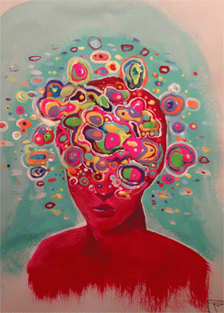

In 2023, I started studying web design and coding, where I began writing code. I am focusing on improving my skills in Front-End development. I enjoy coding and creating web designs. Additionally, I have an interest in areas such as data science and pixel art. Trying out different things is like playing a fun game for me, and I really enjoy it.
My Skills

Philosophy and psychology are my other areas of expertise. Before
starting coding, I was a teacher. Philosophy helped me understand
myself, while psychology assisted me in understanding others.
"Cogito ergo sum"

I create paintings using the acrylic pouring technique. By freely pouring and interacting colors with each other, I craft unique and captivating patterns. Additionally, playing the kalimba is a passion of mine; I enjoy expressing my emotions and nourishing my soul with this melodic instrument.